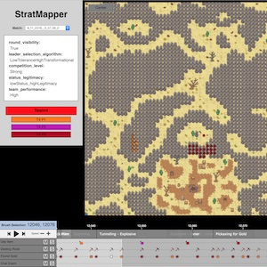
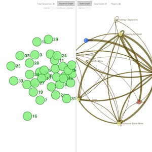
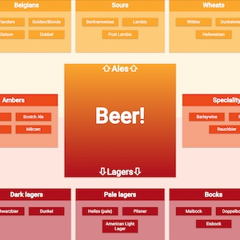
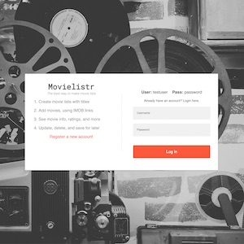

Designer, Developer
I build web applications for researchers in Boston.
Tech: React, Redux, React-Native, D3, Node, MongoDB, Mongoose, Python, HTML,
CSS, Bootstrap, Sass, Wordpress
Skills: Test-driven Development, Mobile-first Design, User Experience, Media
Production, Instructional Design

StratMapper
I designed and built this spatiotemporal visualization and
labeling system for large gaming datasets
React, D3, Node, MongoDB
Government contract: link unavailable

Glyph
I redesigned and maintain this sequence-based visualization
system for labeled behavior data.
HTML, CSS, JavaScript, D3
Government contract: link unavailable

The Beer Chart
An interactive chart for learning about and saving your
favorite beers.
React, Redux, Node, MongoDB

Movielistr
Application for building and sharing lists of movies.
jQuery, Handlebars, Node, MongoDB
Apr 2018 to Present
Northeastern University
Software Developer, Research Assistant
Boston, MA
- Design, build, and maintain full-stack web applications for machine learning and gaming lab at CCIS
- Contribute written material and interactive media to research proposals and papers
- Produce video presentations and tutorials for clients
Jan 2017 to Mar 2018
Academy of Art University
Instructional Media Producer
San Francisco, CA
- Built online courses with proprietary CMS, websites, and applications with JavaScript, Node
- Produced, directed, shot, edited dozens of educational video projects in-studio and on-location
- Managed production, post-production teams
Jan 2014 to Dec 2016
Roble Education
Co-Founder, CTO, Producer
New York, NY
- Managed operations, compliance, HR, and finances for educational media company
- Produced and managed hundreds of domestic and international media projects
- Built websites and maintained learning platforms for multiple institutions
- Notable contracts included UMiami, NYU, Mineola (NY), and Orange (NJ)
Sep 2010 to Sep 2013
Pros and Cons Studios
Co-Founder, Producer
Los Angeles, CA
- Managed operations, compliance, HR, and finances for educational media company
- Produced and managed hundreds of domestic and international media projects
- Built websites and maintained learning platforms for multiple institutions
- Notable contracts included UMiami, NYU, Mineola (NY), and Orange (NJ)
Jun 2008 to Aug 2013 (Summers)
The American School in Switzerland
Teacher, Media Producer
Lugano, Switzerland
- Taught English, drama, and filmmaking to students from around the world
- Produced video marketing projects for Summer and Winter programs using DSLR systems
- Led trips for students and staff throughout Switzerland, Italy
- Assisted with administrative tasks for a program director